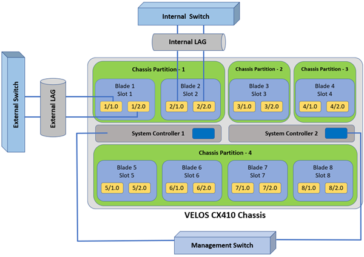
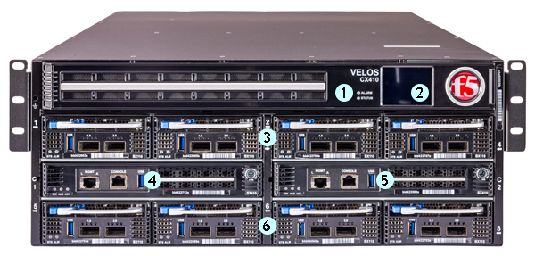
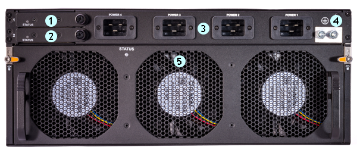
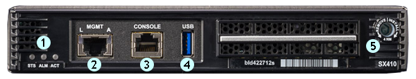
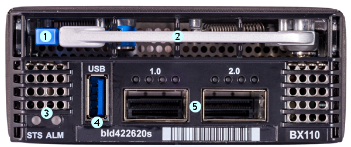

请访问原文链接：介绍一个新物种：F5 VELOS 和 F5OS，查看最新版。原创作品，转载请保留出处。
作者：gc(at)sysin.org，主页：www.sysin.org
F5 公司有通过技术文档提前发布产品的传统，比如 BIG-IP iSeriers 平台就是提前在官方文档中发布的。
最近笔者发现 F5 又有新产品要发布了，VELOS 和 F5OS。文档显示 ”Early Access Only“，官网应该不久要发布。
F5OS 比较好理解就是 F5 操作系统的意思。但是 VELOS 结尾也是 OS 却不是 OS，是硬件，是 F5OS 的硬件平台。F5OS 是 VELOS 平台的软件（操作系统）。
类比：
- VELOS 相当于 F5 BIG-IP Platform
- F5OS 相当于 F5 BIG-IP Software
VELOS 逻辑架构
VELOS 平台是一种机箱和刀片式结构，旨在满足要处理大量应用程序工作负载的大型企业网络环境的需求。
VELOS 系统包括一个称为 F5OS 的平台层，它是系统控制器和机箱分区的组合。机箱分区是一种虚拟系统或机箱的子集，用于管理和分离机箱中不相交的刀片集。您可以将一个机箱划分为多个机箱分区，并且一个机箱分区可以有多个租户。租户是运行软件的来宾系统（例如，一个经典的 BIG-IP 系统）。

此图显示了使用单个 CX410 机箱的简化 VELOS 部署。这里显示的 VELOS 平台被划分为四个独立的机箱分区。分区 1 有两个刀片，分区 2 和分区 3 各有一个刀片，分区 4 有 4 个刀片。每个刀片都装载入一个插槽，可以配置为具有两个接口（40Gb 或 100Gb），也可以将它们拆分为多个接口（25Gb 或 10Gb）。链路聚合在发生网络故障时提供冗余，并且通过在刀片上分散延迟，您可以在有足够资源可用的情况下防止单个刀片出现故障。
机箱通过系统控制器进行管理，系统控制器部署在冗余配置中，提供高可用性和增加的性能。系统控制器连接到带外管理网络，其管理接口可以在一个延迟内连接在一起，以增加冗余。每个系统控制器还具有一个专用控制台连接，用于直接访问控制台。
VELOS 组件
VELOS 硬件组件
VELOS 平台包括三种主要类型的硬件组件：
- 机箱，用于装载刀片、系统控制器和其他组件。
- 系统控制器，为外部管理和连接到在机箱中运行的平台和应用程序提供统一接口。系统控制器还提供命令行界面（CLI）、webUI 和 RESTAPI。
- 刀片，处理流量管理功能，包括分解、数据包分类、流量控制等。
VELOS 软件组件
VELOS 平台包括一个称为 F5OS 的新平台层，它是系统控制器和机箱分区的组合（操作系统）。
目前 VELOS 硬件组件有以下产品型号：
VELOS CX410 chassis (F101) 机箱
VELOS SX410 system controller 系统控制器
VELOS BX110 blade (A118) 刀片连接了可拆卸 LCD 挡板的 VELOS CX410 机箱的前置视图

1. LCD module LEDs (Status and Alarm)
2. LCD touchscreen
3. Blades (or Blanks) 1-4
4. System controller 1
5. System controller 2
6. Blades (or Blanks) 4-8配备 AC 电源的后置视图（当然也有 DC 电源，布局一样，这里不上图了）

1. Power supply controller 1
2. Power supply controller 2
3. Power supply receptacles (1-4)
4. Chassis ground terminals
5. Fan trayX410 Series system controller 前置视图

1. System controller indicator LEDs
2. Management port
3. Console port
4. USB port
5. Jack screwBX110 Series blade 前置视图

1. Latch release
2. Ejector handle
3. Blade indicator LEDs
4. USB port (disabled by default)
5. QSFP28 ports (2)如何访问 VELOS 和 F5OS
可以通过终端服务（SSH）和 AOM 来访问和管理 VELOS 及其 F5OS 软件。
终端（SSH）
对于 VELOS 机箱，刀片服务器没有物理控制台端口。每个系统控制器都有一个物理控制台端口。机箱中的系统控制器提供终端服务，使授权用户能够使用机箱浮动（floating）地址通过 SSH 访问刀片控制台。
在较高级别上，这些用户角色具有终端服务访问权限：
Admin
Users with this role can access any terminals in the chassis.
Terminal server admin
Operator
Users with this role can access any terminals in the chassis.
Partition
Users with this role are not given access to any terminals in the chassis.
由于机箱终端服务使用 SSHD，因此客户端可以使用 SSH 进行连接。终端服务使用一系列网络端口号来区分请求到机箱中各个控制台的连接。
| Console | Port number |
|---|---|
| System controller 1 | 7100 |
| System controller 2 | 7200 |
| Blade <1…x> | 700x |
访问到系统控制器（System controller）和刀片（Blade）示例：
使用 SSH 连接到要访问的刀片或系统控制器。
ssh <blade_or_sys_controller_ip_address> -l admin -p <port_number>
此示例以管理员用户的身份打开插槽 1 中刀片服务器的 SSH 会话：
ssh 192.0.2.10 -1 admin -p 7001
此示例以管理员用户的身份打开到插槽 2 中系统控制器的 SSH 会话：
ssh 192.0.2.10 -1 admin -p 7200
如果尚未有活动的终端会话连接到指定的控制台，则会立即连接。如果已经连接了活动的终端会话，则可以选择终止现有的终端会话并替换它。
完成与刀片或系统控制器的终端会话后，可以通过键入 Enter~ 终止会话。
Always-On Management（AOM）
在将串行电缆连接到系统控制器的任一控制台端口后，您还可以通过使用始终在线管理（AOM）命令菜单选择所需的刀片服务器来访问任何刀片服务器控制台。
系统控制器上的 Always-On Management（AOM）子系统使您能够使用串行控制台远程管理系统，即使刀片服务器已断电。AOM 命令菜单独立于 VELOS 主机操作系统运行。
操作步骤：
使用串口线缆连接到 console 口
按 Esc ( 键打开 AOM 命令菜单
在本例中，您连接到插槽 1 中刀片的控制台，并连接到插槽 1 中系统控制器的串行端口。
1 | Active console : blade 1 |
F5OS 下载
F5OS 1.0.0 已经发布，想要了解产品的细节体验，先下载吧。
百度网盘链接: https://pan.baidu.com/s/1lsILHGVjMdxBxaGGaEY7IQ 密码: vrdo
促销信息：
>>全球网盘极速中转，1G流量不到1元，支持 Rapidgator、Rg.to、Uploaded...
>>阿里云：新用户2核2g仅需86元/年，2核4g企业仅需469.39元/年
>>腾讯云：云产品限时秒杀，爆款1核2G云服务器，首年99元
>>华为云：精选云产品2折起，注册立领8800元上云礼包
如果文章中使用的内容或图片侵犯了您的版权，请联系作者删除。如果您喜欢这篇文章或者觉得它对您有所帮助，欢迎您发表评论，也欢迎您分享这个网站，或者赞赏一下作者，谢谢！
 支付宝打赏
支付宝打赏
 微信打赏
微信打赏
赞赏一下